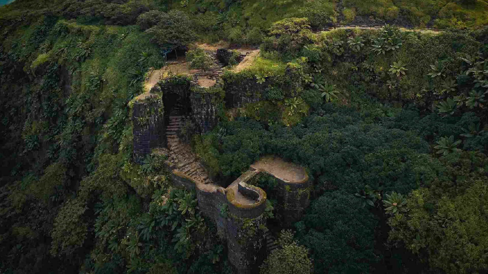

Historical Places in Pune
Pune is rich in history and offers several historical sites to explore. Here are some of the notable historical places in Pune:
Shaniwar Wada
Shaniwar Wada is a historical fortification in the city of Pune, India. Built in 1732, it was the great seat of the Peshwas of the Maratha Empire until 1818.

Aga Khan Palace
The mighty edifice of Aga Khan Palace is situated in Pune and was built by Sultan Muhammed Shah Aga Khan III in the year 1892. It is one of the most important landmarks in Indian history and has been instrumental in many defining moments of India's independence.
Singhagad Fort
Located in the Sahyadri Mountains, Sinhagad Fort is an ancient fortress known for its historical significance and architecture. It was once known as Kondhana and has witnessed a number of battles; one notable battle being the 1670 Battle of Sinhagad. The name, “Sinhagad”, literally means Lion’s Fort signifying its strength and brilliance.
Dagdusheth Halwai Ganpati Temple
A divine place of worship devoted to Lord Ganapati, Shreemant Dagdusheth Halwai Ganapati temple is extremely famous for its religious festivities and is located in Pune, Maharashtra. The temple receives a considerable crowd of devotees every day who come to attend the daily pooja, abhisheka and the Arti of Lord Ganesh.